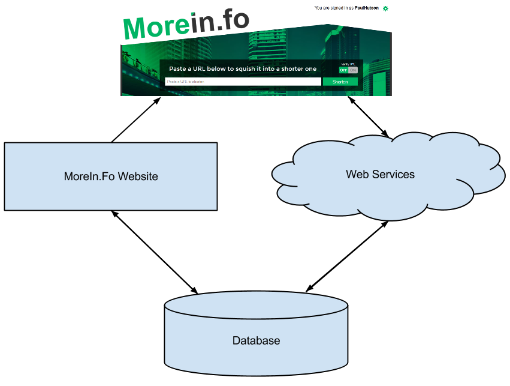
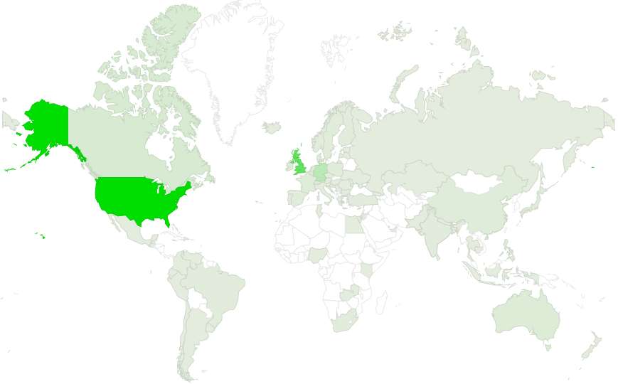

Presented By Paul Hutson / @PaulHutson
What is MoreIn.Fo?
What I'm going to cover in this talk...:
This one might be a suprise... it shortens URLs:
http://www.ThisIsAReallyLongURL.com/WithALoad/OfExtraRouteItems?and=a&query=string
Which we can convert to a shorter link, i.e.
http://morein.fo/123
Meaning you can save your URLs for access on any device.
Instead of
http://morein.fo/123
we could have had
http://morein.fo/Short
Tracking the data about your clicks...
... you can also track individual clicks.
There is also an "aggregated" analytics view as well.
Through Social Media
And through using the bookmarklet and Chrome/Firefox Plugin's
You can automatically group links together to make using them easier...
... your data can also be tracked by #hashtag (which is used to identify the grouped data items).

Using SQL Server
Tables
Stored Procs
Webservices
Returning JSON
HTML
Link Copying:
- Flash
- Mobile Select / Copy
AJAX requests to the WebServices
"Less" generated style sheets
Interestingly the top image area is actually created using shapes on top of a square image.
Using a bookmark to store javascript...
Like the bookmarklet the plugins also shorten the links...
Plugins for both Firefox and Chrome.
Both are created using a mix of HTML and Javascript
Using the @media tag to resize elements between several sizes on resize of a window...
We had to make it work on both a desktop...
... and on mobiles - without *any* feature loss.
Data is being collected ...
When a link is created
When a link is clicked
Header Information from the client, i.e. browser, OS, etc...
Also the IP of the request, for locational data.

Mostly...
Porn - yes, the internet is a filthy place...
Interestingly, lots of them are created late at night...
Quick Links for friends to find things...
Marketing Data, so that companies can properly track clicks.
Loads of other things!